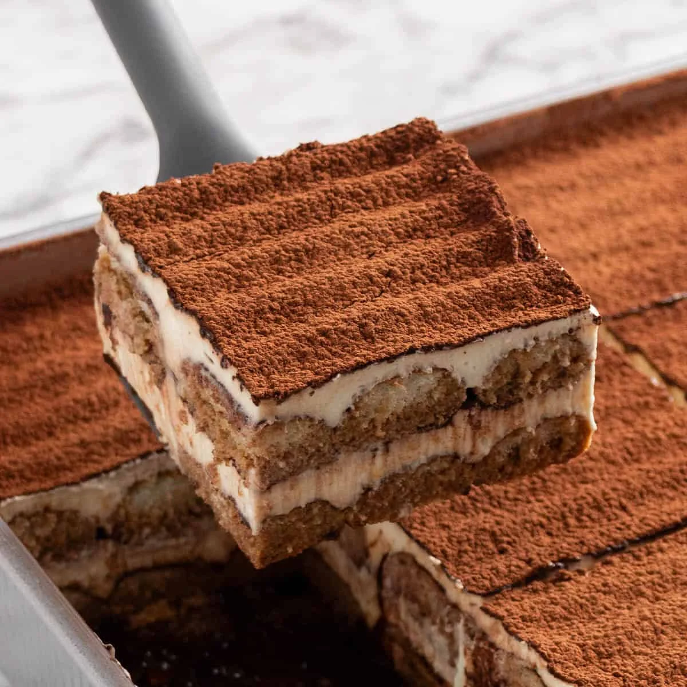
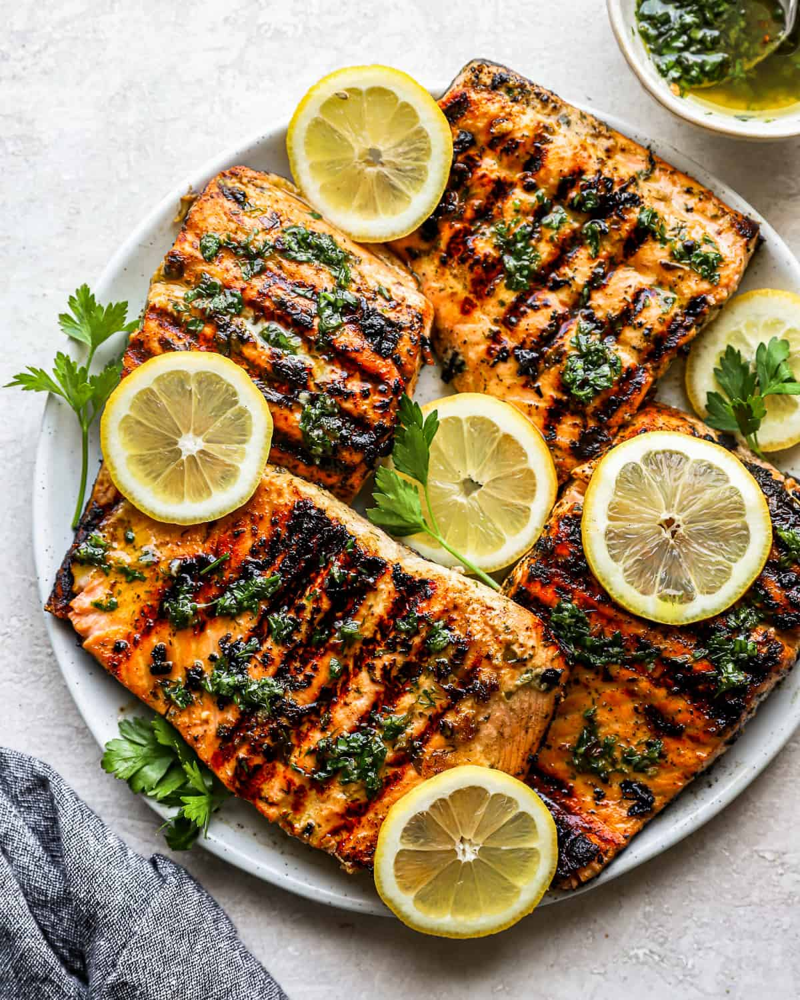

Recipe cards preview

Pizza
Classic recipe card layout.
Ramen
Browse by cuisine and category.

Tiramisu
Search and view recipe details.

Salmon
Save favourites when logged in.
Login / Sign-up contribution
My part focused on building login and sign-up on both the frontend and backend using HTML, CSS, JavaScript, and Django.